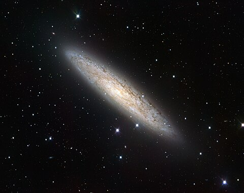

Se denomina galaxia espiral intermedia a una galaxia que, de acuerdo a su forma, se clasifica entre una galaxia espiral barrada y una galaxia espiral sin barra. Se designa como SAB en la clasificación morfológica de galaxias. Los subtipos se etiquetan como SAB0, SABa, SABb, o SABc, siguiendo una secuencia análoga a la secuencia de Hubble para espirales con y sin barras. El subtipo (0, a, b, o c) se basa en la prominencia relativa del bulbo galáctico central y cuán apretados están los brazos en espiral. Generalmente se presenta con dos brazos espirales están envueltos apretadamente alrededor de la barra y además tiene un núcleo extendido y brillante; y su apariencia es diferente de la de una S se asemeja más a la letra griega θ. La composición de estas galaxias es el mismo que el tipo normal de otro, pero se supone que evolucionan a partir de los irregulares, de hecho para justificar lo que se puede tomar como ejemplo la Gran Nube de Magallanes, que se clasifica como irregular, pero se empieza a desarrollar una barra de luz y una espiral brazo.
